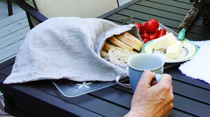

Try an Orkney linen bread bag if you don't want your precious loaf of bread kicking around in a paper or plastic wrapping, even more so if you bake your own.
Give it a touch of permanence with unbleached, natural linen, or ring the changes and try white, black, charcoal or indigo - you could color-code your loaves!
A La Brea loaf fits inside with room to spare. I've heard claims that bread stays fresh longer in linen but mine doesn't hang around enough to find out. Two sizes, for round loaves or longer ones.
(If you are serious about keeping your bread as fresh as it possibly can be, use a three-pronged approach. Put the bread into a linen bag so the crust stays dry, then in an air-tight enclosure so it doesn’t dry out, refrigerated to preserve it.)
Of course a bag is a bag is a bag, so if you want to use it for produce, passports, clothes pegs or cosmetics, feel free!
Two sizes long and round - this one, as if you hadn't guessed, is for a round loaf. A minute after I took this shot, I sliced up the bread and started eating; Full Circle Baking Company' s walnut bread. Mmmmmm, delicious.
This round bag is dedicated to customer, Joanne, who gave us only three stars in her review of the original long bag. "The bag was not wide enough for a round loaf — so I had to cut the bag to get it to fit."
We hear you Joanne. I have created a new size for round bread and I will send you a free bag. Yes, free. Now, what to send you? A new long bag or a new round one? Decisions, decisions — up to you Joanne
"My hubby loves your bread bag and napkins while he enjoys his breakfast outdoors."
Here's a small loaf inside a long bag. Which one to buy? May I suggest both sizes, long and round.
"WOW! This heavy fabric is great. It looks and feels exactly like hand loomed Irish linen. The bread bag keeps rolls hot on the table much longer than a napkin." ~ Derick
{kind=link}
{kind=link}
{kind=link}